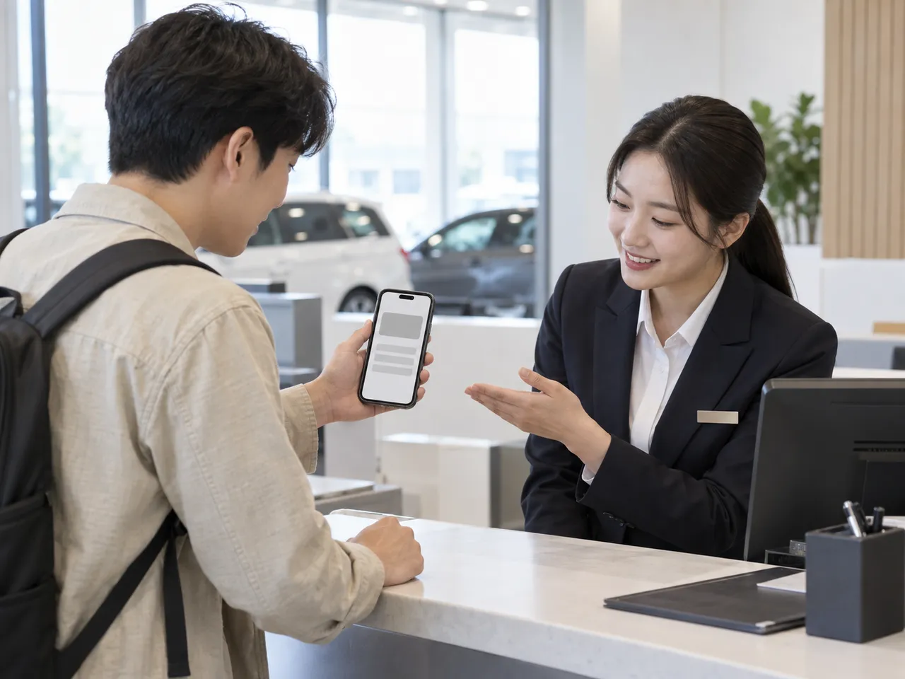
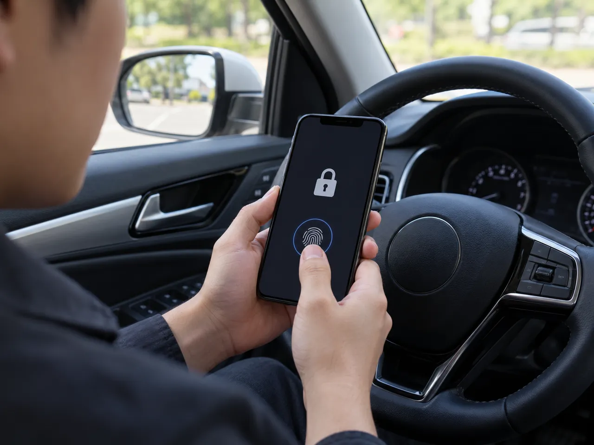

▲ 렌터카 영업소에서 스마트폰으로 본인 확인을 하는 상황을 표현한 개념 이미지. 화면에는 개인정보가 없다 ⓒ CarPrism (AI 생성 이미지)
"은행 앱에서 운전면허증을 받는다는데, 경찰 단속 때도 통할까?" 행정안전부는 2026년 10월부터 우리은행·하나은행·신한은행·IBK기업은행 앱을 모바일 신분증 발급 앱에 추가하고, 내년 삼성카드(모니모)까지 합쳐 총 12개 앱에서 쓸 수 있게 한다고 밝혔다. 운전자에게 궁금한 건 결국 두 가지다. 모바일 운전면허증으로 어디까지 되고, 어디서부터 안 되나. 이 글은 정책뉴스·언론 보도와 모바일 신분증 공식 안내에서 확인된 내용을 먼저 세우고, 확인하지 못한 부분은 "확인 못 함"으로 구분했다. (확인 기준일 2026년 10월 1일)
1. 무엇이 달라지나 — 발급 앱 7개에서 12개로(정부 앱 포함)
모바일 신분증은 2022년 정부 앱(대한민국 모바일 신분증)과 삼성 월렛 중심으로 시작했다. 정책뉴스에 따르면 2025년 7월 23일부터 KB스타뱅킹·네이버·NH올원뱅크·토스·카카오뱅크 등 민간 앱을 통한 발급이 본격화됐고, 당시 누적 발급자가 670만 명이라고 안내했다. 이어 2026년 5월 행안부가 삼성카드를 새 참여기업으로 선정하면서 확대 일정이 공개됐다.
| 시기 | 앱 | 비고 |
|---|---|---|
| 현재 | 정부 앱, 삼성 월렛, KB스타뱅킹, 네이버, NH올원뱅크, 토스, 카카오뱅크 | 정부 앱 + 민간 6개(보도 기준) |
| 2026년 10월 | 우리은행, 하나은행, 신한은행, IBK기업은행 앱 | 정부 앱 포함 현재 7개에서 10월 11개로 늘고(데일리안), 삼성카드까지 12개 |
| 2027년(내년) | 삼성카드 모니모 | 적합성 평가 후 정식 서비스, 내년부터 12개 앱으로 집계(머니투데이·ZDNet 보도) |
발급할 수 있는 신분증은 주민등록증·운전면허증·국가보훈등록증·장애인등록증·외국인등록증이다. 데일리안 등은 "민간앱 발급 신분증도 정부앱 발급분과 법적 효력이 같다"고 전했고, 헤럴드경제는 민간 앱 발급의 절차·방법도 정부 앱과 같다고 보도했다. 다만 이 글은 10월 개시일이 정확히 며칠인지, 은행별 앱이 iOS·안드로이드를 모두 지원하는지는 확인하지 못했다. 2025년 정책뉴스에서도 일부 앱은 아이폰 지원이 순차 확대라고 안내했으니 앱 스토어 설명을 먼저 보자. 정책뉴스에서 확인하기
▲ 우리은행 지점이 있는 거리 풍경(부산 구포). 이제 은행 앱에서도 모바일 운전면허증을 발급받을 수 있게 된다 ⓒ hyolee2 / Wikimedia Commons (CC BY-SA 3.0)
2. 모바일 운전면허증으로 되는 것, 안 되는 것
정책뉴스는 모바일 운전면허증이 현행 운전면허증과 동일한 법적 효력을 가지며 공공기관, 금융기관, 렌터카 등 기존 면허증이 쓰이는 모든 곳에서 사용할 수 있다고 안내했다. 뉴시스 Q&A에는 병원·공항·편의점·주류 판매점·호텔 등도 사용처로 소개돼 있다. 쏘카는 모바일 운전면허증·PASS 인증으로 등록할 수 있다고 안내하고, 그린카도 모바일 면허 인증을 지원한다고 보도됐다(그린카 공식 안내는 확인하지 못했다). 해외에서의 사용은 공식 근거를 확인하지 못했다.
| 상황 | 가능 여부 | 근거·메모 |
|---|---|---|
| 경찰 교통단속 시 제시 | 가능(법적 효력 동일) | 2022년 시행규칙 개정으로 동일 효력 부여(검색 확인). 경찰청 원문 안내는 직접 확인 못 함 |
| 렌터카·카셰어링 인수 | 가능 | 정책뉴스: 렌터카 사용 가능. 카셰어링 업체별 인정 여부는 업체 안내 확인 |
| 은행·관공서·병원 본인확인 | 가능 | 정책뉴스·뉴시스 Q&A 기준 |
| 편의점·주류 구매 연령 확인 | 가능 | 신분증 확인 장소 전반(정책뉴스) |
| 해외 운전·해외 렌터카 | 공식 확인 못 함 | 국제운전면허증·영문운전면허증 등 별도 서류 필요, 국가별 인정 여부는 외교부·현지 확인 |
| 타인 명의 모바일 면허증 사용 | 금지 | 도로교통법 제92조 제3항(2024년 1월 30일 개정, 7월 31일 시행으로 신설) |
| 일부 사업장·시스템 인식 | 확인 못 함 | 현장 사정은 사용기관마다 다를 수 있어 실물 면허증 병행 권장 |
▲ 2022년 7월 28일 열린 모바일 운전면허증 전국발급 개통식. 정부는 전국 시험장·경찰서에서 발급을 시작했다 ⓒ Seojoohyun / Wikimedia Commons (CC BY-SA 4.0)
3. 운전 중 단속에서는 어떻게 되나
도로교통법 제92조는 자동차 등을 운전할 때 운전면허증 등을 지니고, 경찰공무원이 교통안전·질서 유지를 위해 제시를 요구하거나 신원·면허 확인 질문을 하면 응해야 한다고 규정한다. 이 요구에 따르지 않으면 20만 원 이하의 벌금 또는 구류에 처한다(벌칙은 제155조에 규정돼 있다). 모바일 운전면허증은 2022년 1월 시범발급 때부터 플라스틱 면허증과 같은 법적 효력으로 안내됐다(정책뉴스·뉴시스). 따라서 휴대폰에 발급된 모바일 면허증을 보여주는 것은 법적으로 면허증 제시와 같다고 이해하면 된다. 다만 "단속 현장에서 모바일만 있으면 충분하다"는 경찰청의 개별 공식 안내문은 이번에 직접 확인하지 못했다.

▲ 모바일 신분증 앱은 화면 잠금과 별도로 앱 비밀번호·생체 인증을 거쳐야 표시된다. 화면은 개념 표현이며 정차한 상태를 가정한 장면이다(운전 중 휴대전화 조작은 금지) ⓒ CarPrism (AI 생성 이미지)
✅ 운전자가 지켜야 할 것
· 신분 확인을 요구받으면 차를 안전하게 세운 뒤 앱을 열어 보여준다. 운전 중 휴대폰을 손에 들고 조작하는 것은 별개의 위반이다
· 배터리가 방전되거나 앱이 열리지 않을 때를 대비해 실물 면허증도 함께 지니는 편이 안전하다(편집부 권고)
· 앱 화면을 캡처한 사진은 모바일 면허증이 아니다. 타인 명의 모바일 면허증 부정 사용은 법으로 금지된다
4. 발급 절차 — IC 면허증이 있으면 태깅 한 번
모바일 신분증 공식 안내에 따르면 유효한 운전면허를 가진 사람은 누구나 신청할 수 있으며, 방법은 두 가지다.
| 방식 | 절차 | 비용·준비물 |
|---|---|---|
| IC 운전면허증 | 안전운전 통합민원 또는 시험장·경찰서에서 IC 면허증 발급 → 모바일 신분증 앱 설치 → 면허증을 폰 뒷면에 태깅해 본인 인증 | 공식 안내상 수수료 15,000원, 6개월 이내 촬영 사진 1장(3.5×4.5cm)·신분증(공식 발급안내) |
| QR 발급 | 기존 면허증을 바꾸고 싶지 않다면 시험장에서 신청서 작성 후 QR로 앱에서 발급 | 실물 면허증 지참, 시험장 방문 |
민간 앱에서도 절차와 방법은 정부 앱과 같다고 보도됐다. 처음 신청하는 경우 시험장이나 경찰서에서 신원 확인을 받는 것이 원칙이라고 정책뉴스가 설명했다. 수수료와 발급 기준은 바뀔 수 있으니 신청 전 공식 사이트를 확인하자. 모바일 신분증 발급 안내 바로가기
▲ IC 면허증을 폰 뒷면에 대는 태깅 과정을 표현한 개념 이미지. 실제 면허증이 아니라 무지 카드다 ⓒ CarPrism (AI 생성 이미지)
5. 분실·휴대폰 교체 시 재발급
모바일 운전면허증은 본인 명의 스마트폰 1대에만 발급된다(2026년 8월 28일 시행 전자정부법 시행령 개정으로 명시, 아주경제 보도). 폰을 바꾸면 다시 발급받아야 하고, IC 면허증 소지자는 새 폰에 앱을 설치해 재발급 메뉴에서 실물 면허증을 태깅하고 안면 인증을 하면 바로 발급된다는 것이 공식 안내다. 반면 QR 방식으로 받았다면 시험장을 다시 찾아 신청서를 내고 새 QR을 받아야 한다. IC 면허증이 폰 교체와 분실에 더 편한 이유다.
| 상황 | 할 일 |
|---|---|
| 폰 교체(IC 면허증 보유) | 새 폰에 앱 설치 → 재발급 메뉴 → 실물 면허증 태깅 → 안면 인증 |
| 폰 교체(QR 발급자) | 시험장 방문, 신청서 제출 후 새 QR 발급 |
| 폰 분실·도난 | 모바일 신분증 홈페이지 또는 고객센터(1688-0990, 모바일신분증 공식 사이트 안내)로 분실 신고 → 모바일 면허증 잠김 처리 |
| 배터리 방전·앱 오류 | 실물 면허증 지참 권장(편집부 의견) |
6. 자주 묻는 질문
Q. 은행 앱으로 받은 모바일 면허증은 효력이 약하지 않나?
행안부 설명으로는 민간 앱 발급분도 정부 앱 발급분과 법적 효력이 같다. 안전성·신뢰성도 같은 수준이라고 보도됐다.
Q. 실물 면허증은 이제 필요 없나?
법적 효력은 같지만 방전·앱 오류·해외 사용을 고려하면 실물을 함께 지니는 것이 안전하다. IC 면허증은 폰 교체 시 재발급에도 필요하다.
Q. 해외 렌터카에도 쓸 수 있나?
해외 사용에 대한 공식 근거는 확인하지 못했다. 해외 운전에는 국제운전면허증이나 영문운전면허증을 준비하고, 인정 국가는 외교부와 렌터카 회사 안내로 출국 전 확인해야 한다.
Q. 면허를 갱신하면 어떻게 되나?
갱신 시 모바일 면허증이 어떻게 이어지는지는 이번에 공식 자료로 확인하지 못했다. 갱신 직후 앱에서 정보가 맞는지 확인하자.
7. 알아둘 주의점
- 10월 앱 개시일은 앱별로 다를 수 있다. 이 글 기준일에 모든 은행 앱이 이미 열렸는지는 확인하지 못했다.
- OS 지원 범위를 확인하라. 2025년 정책뉴스에서도 일부 앱은 아이폰 지원이 순차 확대라고 했다.
- 스마트폰 보안을 챙기자. 신분증은 앱 비밀번호·생체 인증으로 보호되지만, 폰 분실 시 즉시 이용중지 신고가 우선이다.
- 사진 캡처로 대신하지 말자. 면허증 캡처본은 모바일 면허증이 아니다.
- 사칭 앱·문자를 조심하자. 문자 링크로 신분증 정보를 요구하면 의심해야 한다(일반 보안 수칙). 발급은 정부 앱 또는 참여 금융사 앱에서만 한다.
8. 요약
2026년 10월부터 우리·하나·신한·IBK기업은행 앱이 모바일 신분증 발급 앱에 추가되고, 내년 삼성카드까지 총 12개 앱이 된다. 민간 앱 발급분도 정부 앱과 법적 효력이 같다.
모바일 운전면허증은 플라스틱 면허증과 같은 효력으로 렌터카·카셰어링·금융기관·병원에서 쓸 수 있고, 해외 사용은 공식 확인하지 못했다. 폰 교체는 재발급, 분실은 즉시 이용중지 신고가 원칙이며 IC 면허증 방식이 번거로움이 적다.
10월 개시일, 앱별 iOS 지원, 경찰청의 개별 안내문은 확인하지 못했으니 앱 스토어와 공식 사이트를 먼저 보고, 당분간 실물 면허증도 함께 챙기자. (기준일 2026년 10월 1일)